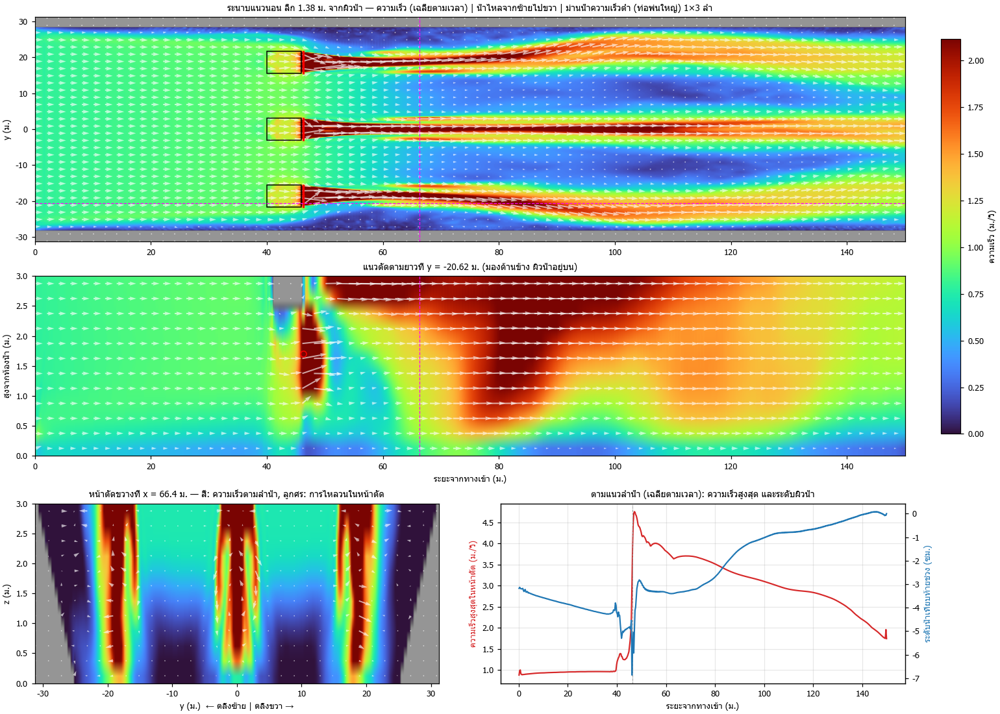
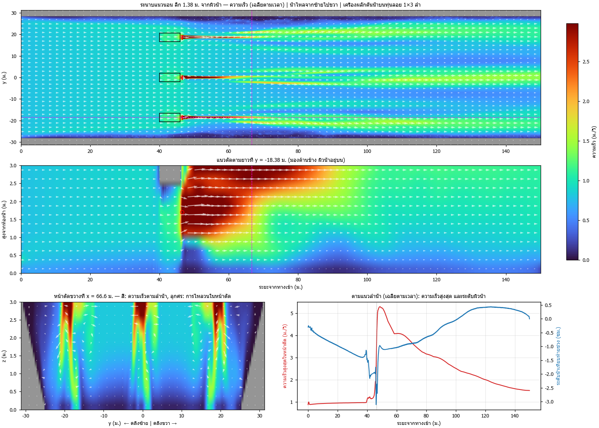
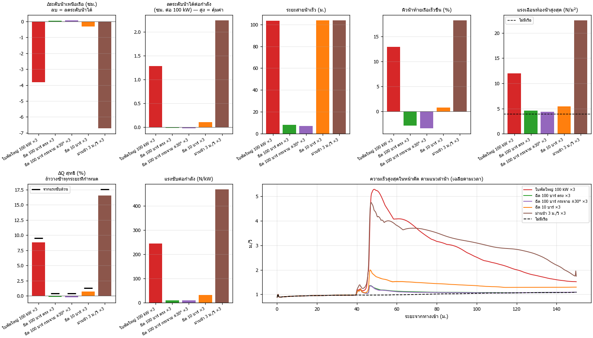
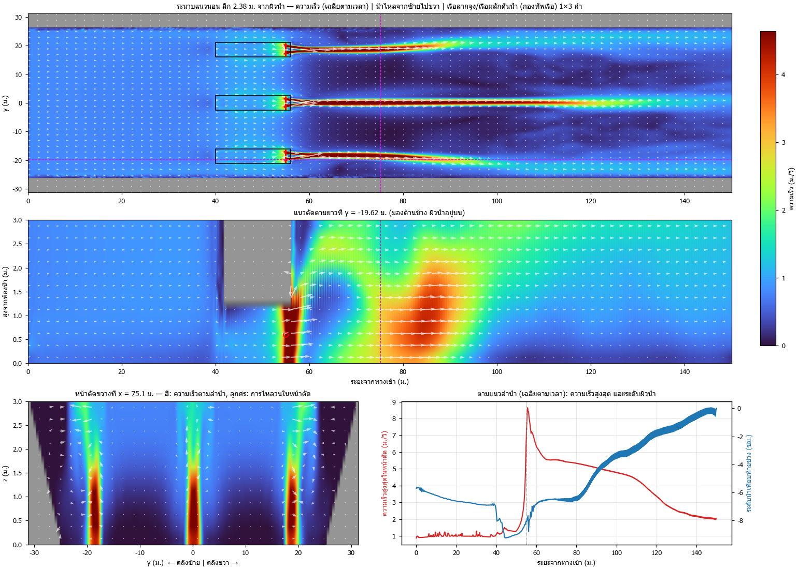
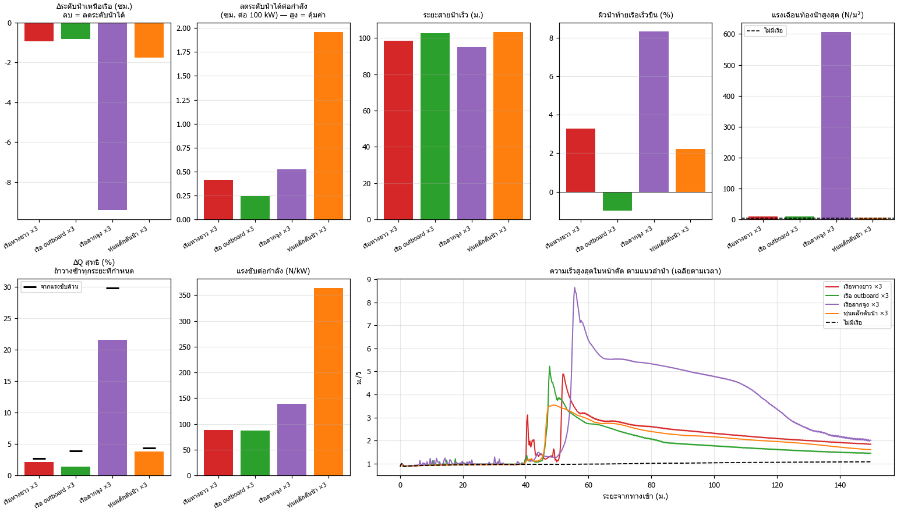
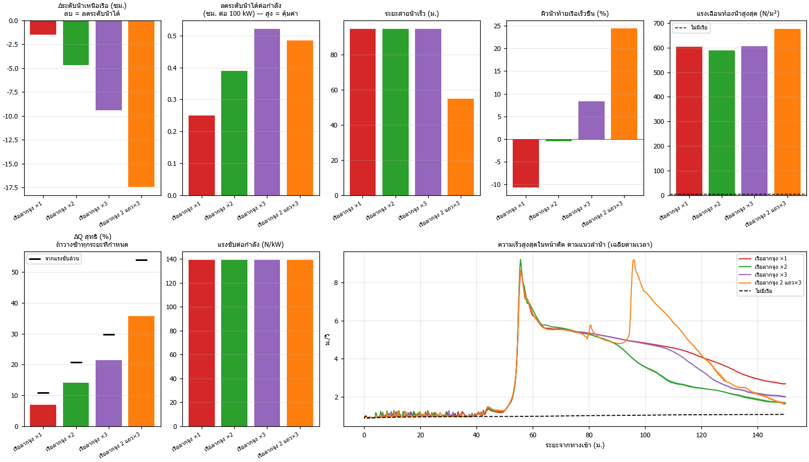
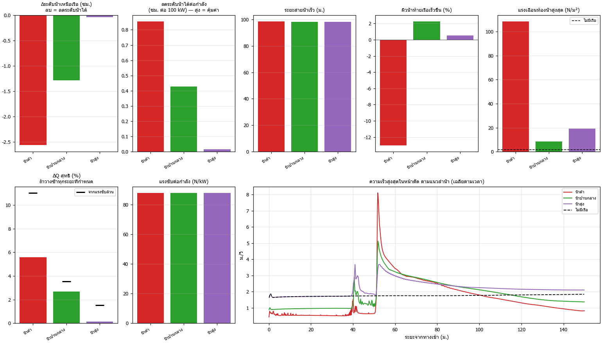
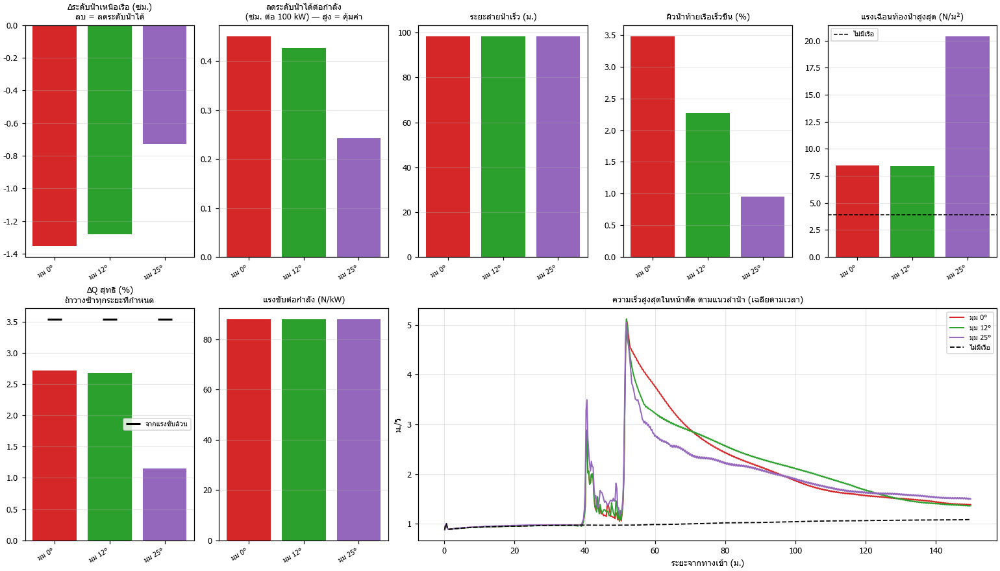
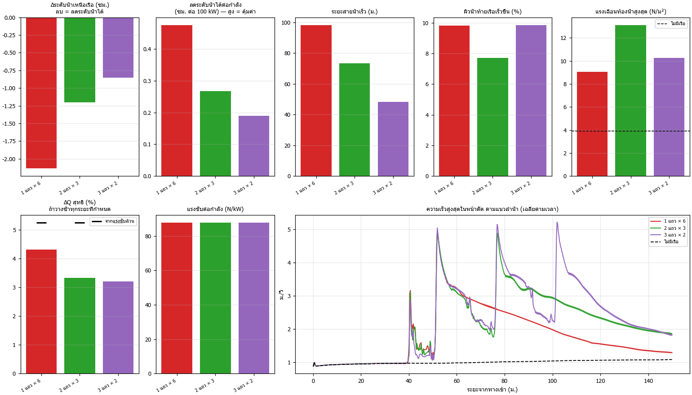

Flood Sim · แบบจำลอง 3 มิติ · 6 ต.ค. 2026
ผลทดสอบเรือดันน้ำ 3 มิติ
ผลจำลองการไหล 3 มิติของช่วงลำน้ำยาว 150 ม. เมื่อมีเรือดันน้ำและอุปกรณ์อื่นทำงานอยู่ เทียบกับกรณีไม่มีเรือ
ทั้งหมด 6 การทดสอบ: ชนิดเรือ, จำนวนเรือ, ระดับน้ำ, มุมใบพัด, การจัดแถว และเครื่องฉีดน้ำ/ม่านน้ำ
ความลึกน้ำ 3 ม.
อัตราการไหล 129 ม³/วิ
ความเร็วเฉลี่ย 0.77 ม./วิ
กว้าง ~60 ม. ตลิ่งลาด 1:2
Manning n = 0.03
แบบจำลอง LBM D3Q19 + LES + wall model
ข้อสรุปหลัก
- คุ้มค่าที่สุดใบพัดใหญ่หมุนช้า (ทุ่นผลักดันน้ำ) และม่านน้ำความเร็วต่ำ ใช้กำลังเพียง 45–51 kW ต่อการลดระดับน้ำ 1 ซม. ดีกว่าเรือหางยาวและเรือ outboard 5–8 เท่า
- ฉีดแรงดันสูงไม่ได้ผลหัวฉีด 100 บาร์ได้แรงดันน้ำเพียง 10 N ต่อ kW น้อยกว่าแรงต้านของทุ่นที่ติดตั้ง ระดับน้ำกลับสูงขึ้นเล็กน้อย การฉีดกระจายยิ่งได้แรงไปข้างหน้าน้อยลง
- เรือลากจูงลดระดับน้ำได้มากที่สุดต่อกลุ่ม (−9.4 ซม. จาก 3 ลำ) แต่ใบพัดอยู่ใกล้ท้องน้ำ สายน้ำวิ่งเลียท้องน้ำ แรงเฉือนสูงถึง ~600 N/ม² เสี่ยงกัดเซาะหนัก
- น้ำหลากล้นตลิ่งที่ระดับน้ำ 5 ม. (ล้นตลิ่ง) ผลของเรือวัดไม่ได้ เพราะโมเมนตัมของแม่น้ำมากกว่าแรงดันของเรือหลายสิบเท่า ช่วงนั้นควรใช้มาตรการเพิ่มความสามารถระบายน้ำแทน
- วิธีใช้งานวางใบพัดแนวนอน (มุมกดไม่เกิน 12°) และเรียงเรือขวางลำน้ำแถวเดียว ได้แรงสุทธิมากกว่าการเรียงหลายแถวประมาณ 30%
- ขนาดของผลกลุ่มเรือหนึ่งกลุ่มลดระดับน้ำเฉพาะที่ได้ไม่กี่เซนติเมตร การเพิ่มอัตราการไหลของทั้งแม่น้ำอย่างมีนัยต้องวางกลุ่มเรือซ้ำทุก ~1 กม. ตลอดลำน้ำ
ลดระดับน้ำได้ต่อกำลังเครื่อง
เซนติเมตรที่ระดับน้ำด้านเหนือกลุ่มเรือลดลง ต่อกำลัง 100 kW (ยิ่งยาวยิ่งคุ้ม) — รวมผลจากการทดสอบ 1 และ 6
แต่ละอุปกรณ์ใช้ 3 ชุดเรียงขวางลำน้ำ กำลังรวมต่างกันตามชนิด (90–1,800 kW) ม่านน้ำ ใบพัดใหญ่ 100 kW และหัวฉีดมาจากการทดสอบ 6 ที่กำลังรวม 300 kW เท่ากัน
การทดสอบ 6 ม่านน้ำและหัวฉีด เทียบกับใบพัดใหญ่
ทุ่นลอย 3 ชุดเรียงขวางลำน้ำ กำลังรวม 300 kW เท่ากันทุกกรณี สิ่งที่ดันน้ำคือโมเมนตัม (มวล × ความเร็ว) แรงดันต่อกำลังเท่ากับ 2η/v
ยิ่งฉีดเร็วยิ่งได้แรงต่อกำลังน้อย
| กรณี (300 kW) | แรงดันน้ำ
kN | ระดับน้ำ
ซม. | kW ต่อ
ลด 1 ซม. | ผิวน้ำ
เร็วขึ้น | แรงเฉือนท้องน้ำ
สูงสุด N/ม² | ΔQ ถ้าวาง
ทุก 1 กม. |
|---|
| ม่านน้ำ 3 ม./วิ (ท่อ ~1.3 ม.) | 140 | −6.72 | 45 | +18.3% | 22.5 | +16.6% |
| ใบพัดใหญ่ 1.6 ม. | 73 | −3.83 | 78 | +13.0% | 12.0 | +8.8% |
| หัวฉีด 10 บาร์ (~45 ม./วิ) | 9.4 | −0.31 | 967 | +0.8% | 5.4 | +0.7% |
| หัวฉีด 100 บาร์ ตรง | 3.0 | +0.05 | – | −2.8% | 4.6 | −0.2% |
| หัวฉีด 100 บาร์ กระจาย ±30° | 3.0 | +0.07 | – | −3.4% | 4.4 | −0.2% |
ไม่มีเรือ: แรงเฉือนท้องน้ำสูงสุด 3.9 N/ม²

ม่านน้ำ: สายน้ำกว้าง ความเร็วปานกลาง เต็มความลึกมากกว่า ยังเร็ว ~3 ม./วิ ที่ระยะ 100 ม. (สเกลสีสูงสุด 2.1 ม./วิ)

ใบพัดใหญ่: สายน้ำแคบเร็วถึง 5 ม./วิ ชิดผิวน้ำ กระจายตัวภายใน ~60 ม. (สเกลสีสูงสุด 2.9 ม./วิ)
สรุป ม่านน้ำความเร็วต่ำคุ้มค่ากว่าใบพัดใหญ่ ~1.7 เท่า แต่แรงเฉือนท้องน้ำสูงเกือบ 2 เท่า ควรติดตั้งท่อพ่นให้ใกล้ผิวน้ำ
หัวฉีดแรงดันสูงไม่เหมาะกับงานดันน้ำ

การทดสอบ 6: กราฟเปรียบเทียบทุกกรณี
การทดสอบ 1 ชนิดเรือ
| เรือ ×3 ลำ | กำลังรวม
kW | ระดับน้ำ
ซม. | kW ต่อ
ลด 1 ซม. | แรงเฉือนท้องน้ำ
สูงสุด N/ม² | ΔQ ถ้าวาง
ทุก 1 กม. |
|---|
| ทุ่นผลักดันน้ำ | 90 | −1.76 | 51 | 5.4 | +3.8% |
| เรือลากจูง | 1,800 | −9.42 | 191 | 607 | +21.5% |
| เรือหางยาว | 225 | −0.94 | 240 | 9.6 | +2.1% |
| เรือ outboard | 330 | −0.81 | 406 | 9.5 | +1.4% |

เรือลากจูง 3 ลำ: ตัวเรือกินน้ำ 1.8 ม. ในน้ำลึก 3 ม. ใบพัดอยู่ใต้ท้องเรือ สายน้ำเร็วกว่า 4 ม./วิ วิ่งชิดท้องน้ำเกิน 100 ม. ระหว่างสายน้ำน้ำไหลช้าลง
ข้อควรระวัง เรือลากจูงในน้ำตื้นกัดเซาะท้องน้ำเป็นแนวแคบตามแนวใบพัด ควรใช้ในจุดที่น้ำลึกกว่าระยะกินน้ำ 2–3 เท่า

การทดสอบ 1: กราฟเปรียบเทียบ
การทดสอบ 2 จำนวนเรือลากจูง
| จำนวนเรือ | กำลังรวม
kW | แรงสุทธิ
kN | ระดับน้ำ
ซม. | kW ต่อ
ลด 1 ซม. | ผิวน้ำ
เร็วขึ้น | ΔQ ถ้าวาง
ทุก 1 กม. |
|---|
| 1 ลำ | 600 | 52 | −1.50 | 399 | −10.7% | +6.9% |
| 2 ลำ | 1,200 | 110 | −4.68 | 257 | −0.5% | +14.1% |
| 3 ลำ เรียงขวาง | 1,800 | 174 | −9.39 | 192 | +8.3% | +21.5% |
| 6 ลำ (2 แถว × 3) | 3,600 | 308 | −17.43 | 207 | +24.5% | +35.7% |
แรงสุทธิเพิ่มเกือบเป็นสัดส่วนกับจำนวนเรือ ส่วนการลดระดับน้ำเพิ่มเร็วกว่าจำนวนเรือ เพราะสายน้ำหลายสายรวมกันเป็นกระแสกว้าง
เรือลำเดียวทำให้ผิวน้ำช้าลง เพราะสายน้ำชิดท้องน้ำดึงน้ำผิวลงไป ทุกกรณีแรงเฉือนท้องน้ำ 590–680 N/ม²

การทดสอบ 2: กราฟเปรียบเทียบ
การทดสอบ 3 ระดับน้ำ
| ระดับน้ำ (เรือหางยาว 4 ลำ, 300 kW) | อัตราการไหล
ม³/วิ | ระดับน้ำ
ซม. | kW ต่อ
ลด 1 ซม. | ผิวน้ำ
เร็วขึ้น | แรงเฉือนสูงสุด
(ไม่มีเรือ) N/ม² | ΔQ ถ้าวาง
ทุก 1 กม. |
|---|
| น้ำต่ำ 1 ม. | 20 | −2.56 | 117 | −13.0% | 108 (1.5) | +5.6% |
| น้ำปานกลาง 3 ม. | 129 | −1.28 | 234 | +2.3% | 8.4 (3.9) | +2.7% |
| น้ำสูง 5 ม. (ล้นตลิ่ง) | 469 | −0.04 | ~6,800 | +0.5% | 19 (8.1) | +0.1% |
ข้อควรระวัง ช่วงน้ำหลากล้นตลิ่ง ผลของเรือเล็กจนวัดไม่ได้ ส่วนช่วงน้ำต่ำได้ผลมากที่สุดแต่กัดเซาะท้องน้ำแรงที่สุด

การทดสอบ 3: กราฟเปรียบเทียบ
การทดสอบ 4 มุมกดใบพัด
| มุม (เรือหางยาว 4 ลำ, 300 kW) | แรงสุทธิ
kN | ระดับน้ำ
ซม. | kW ต่อ
ลด 1 ซม. | ผิวน้ำ
เร็วขึ้น | แรงเฉือนท้องน้ำ
สูงสุด N/ม² | ΔQ ถ้าวาง
ทุก 1 กม. |
|---|
| 0° แนวนอน | 20.2 | −1.35 | 222 | +3.5% | 8.4 | +2.7% |
| 12° (ปกติของเรือหางยาว) | 19.8 | −1.28 | 234 | +2.3% | 8.4 | +2.7% |
| 25° | 8.5 | −0.73 | 412 | +0.9% | 20.4 | +1.2% |
สรุป ให้ใบพัดอยู่แนวนอนหรือกดไม่เกิน 12° การกดใบพัดลงมากเสียแรงดันน้ำเกินครึ่งและกัดเซาะท้องน้ำเพิ่ม 2.4 เท่า

การทดสอบ 4: กราฟเปรียบเทียบ
การทดสอบ 5 การจัดแถวเรือ
| การจัดวาง (เรือหางยาว 6 ลำ, 450 kW) | แรงสุทธิ
kN | ระดับน้ำ
ซม. | kW ต่อ
ลด 1 ซม. | ΔQ ถ้าวาง
ทุก 1 กม. |
|---|
| 1 แถว × 6 (ขวางลำน้ำ) | 32.3 | −2.14 | 210 | +4.3% |
| 2 แถว × 3 | 24.9 | −1.21 | 373 | +3.3% |
| 3 แถว × 2 | 23.8 | −0.85 | 528 | +3.2% |
เรือแถวหลังดูดน้ำที่ถูกเร่งมาแล้วจากแถวหน้า จึงเพิ่มแรงได้น้อยลง ส่วนหนึ่งของผลต่างด้านระดับน้ำมาจากแถวหลังมีระยะถึงท้ายช่วงจำลองสั้นกว่า

การทดสอบ 5: กราฟเปรียบเทียบ
ข้อจำกัดของผล
- ค่าเครื่องยนต์และใบพัดของเรือแต่ละชนิดเป็นค่าประมาณ ควรใส่ข้อมูลจริงของเรือที่จะใช้ก่อนนำตัวเลขไปตัดสินใจ
- ม่านน้ำและหัวฉีดจำลองเป็นแหล่งโมเมนตัมในอุดมคติ ประสิทธิภาพปั๊ม 70% ไม่รวมการสูญเสียที่ปากดูดและในท่อ
- ผิวน้ำเป็นแบบ rigid lid: ไม่จำลองคลื่นหรือผิวน้ำยุบรอบใบพัดตื้น ระดับน้ำคำนวณจากความดันใต้ผิวน้ำ
- wall model ให้แรงเสียดทานตรงกับสมการแมนนิ่ง ±10% ในช่องสี่เหลี่ยม ส่วนหน้าตัดคางหมูช่วง ~100 ม. แรกยังสูงกว่า 1.3–1.5 เท่า
ค่าแรงเฉือนท้องน้ำของสายน้ำที่วิ่งชิดท้องน้ำ (เช่นเรือลากจูง ~600 N/ม²) ขึ้นกับสมมติฐานนี้ ควรยืนยันด้วยการวัดจริง
- "ΔQ ถ้าวางทุก 1 กม." ประมาณจากสมดุลโมเมนตัมของช่วงจำลอง 150 ม. ไม่ได้จำลองทั้งลำน้ำ เหมาะใช้เปรียบเทียบระหว่างทางเลือกมากกว่าทำนายค่าสัมบูรณ์
วิธีรันซ้ำ
โค้ดอยู่ที่ github.com/ThTpk/water_flow_simulation
รันการทดสอบด้วย python -m floodsim --boat-test N --gpu-duty 0.3 --out results/testN (N = 1–6)
แต่ละการทดสอบใช้เวลา ~25–50 นาทีบน RTX 5070 Laptop ที่ GPU ทำงาน 30%